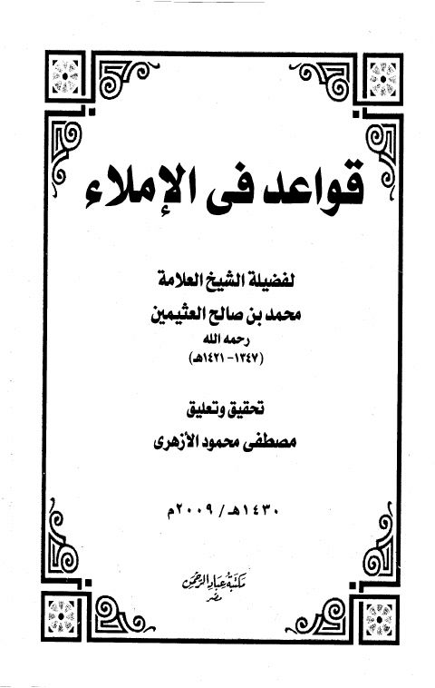

Downloads need an internet connection.
قواعد في الإملاء
Authors: محمد بن صالح العثيمين
Editors: مصطفى محمود الأزهري
Publishers: مكتبة عباد الرحمن
**▫️ العنوان: قواعد في الإملاء** ▪️ المؤلف: #محمد_بن_صالح_العثيمين ▫️ المحقق: #مصطفى_محمود_الأزهري ▪️ الناشر: #مكتبة_عباد_الرحمن ▫️ تاريخ النشر: 1430ه، 2009م ▪️ بلد النشر: القاهرة، #مصر ▫️ الطبعة: 1 ▪️ عدد الأجزاء: 1 ▫️ الصفحات: 16 ▪️ نوع الوعاء: #بحث ▫️ التصنيف الرئيسي: #اللغة_العربية ▪️ التصنيف الفرعي: #نحو_لغة ۪